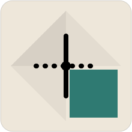

C2 plus the original four proposals and the current mark, each at 20 / 48 / 220px, on paper and on the dark (--fold-deep) ground. All keep the crease notation: solid = mountain = extracted, dashed = valley = inferred.
A refinement of C after the first round showed two problems: C's crease crossing collapsed into a plain "+" at 20px, and node dots on every candidate read as a stats/plot icon rather than paper. C2 removes every node but the centre (the org, where the two creases cross) and lets the four quadrant colour blocks — three paper tones pinwheeling around the centre, the lower-right one teal — carry the read instead. The creases are drawn short, stopping at the seam around the teal quarter, so they can't out-compete the quadrants and flatten into a cross. The teal quarter sits behind a sliver of bare paper on its two inner edges: the "lift," with no drop shadow.
A paper-crane head and neck built from two straight facets: the body (large repo) and head (small repo) triangles. The neck crease is the mountain edge joining them; the beak crease is the dashed, inferred continuation. Unmistakably a crane at any size, but the "graph" reading needs the caption to land — it's the most purely origami of the four.
Three panels of a folded paper map, each panel one repo. A node sits atop each panel and a line strings them into a 3-node path — the fold lines double as the path's edges. Reads instantly as "a folded map with parts," which matches the org-map idea directly, though at 20px the three panels compress into a plain striped square.
One mountain diagonal and one valley diagonal quarter a square into four triangular repo facets, crossing at a centre "org" node — the two creases ARE the graph's edges, radiating from a hub. This is the most literal fusion of fold-notation and graph of the set, and the only one where removing either reading (fold or graph) breaks the other. Legible as a folded, quartered sheet at 20px; legible as a 4-node star graph at 220px.
The opening of a real origami waterbomb base: four triangular flaps folding toward a centre hub, one caught lifted to show its teal underside. Each flap tip is a repo node, the four spokes are crease-edges — the 4-spoke star is the shape a small org's dependency map most often actually takes. Truest to a real fold sequence, but the most detail to preserve at 20px.
Nine faint squares, one solid and one dashed diagonal crease, a teal flap clipped to the lower-right triangle. Reads as a generic "folded-corner document" icon rather than as origami or as a map of anything in particular.
Mark C2 (recommended) at nav scale, next to "orgami" set in Bricolage Grotesque 700.

orgami